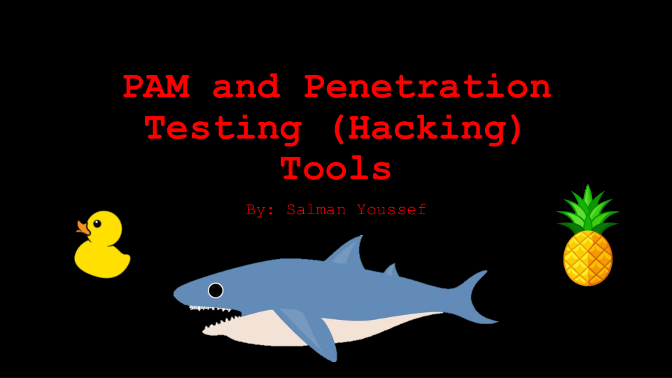

Salman Ayman Youssef · Travaux originaux
PAM et sensibilisation à la sécurité — Présentation originale
Présentation originale de 14 diapositives préparée pour un client en septembre 2024, reliant les accès privilégiés, les outils de sécurité, la surveillance et les mesures défensives.
